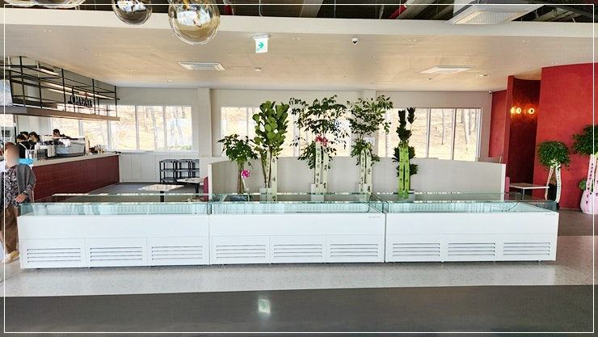
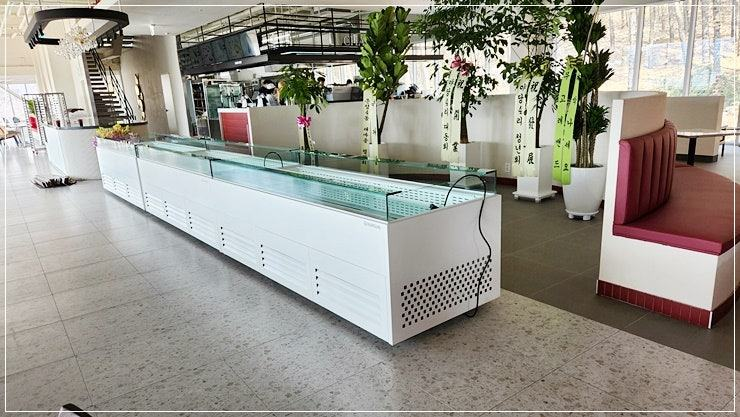
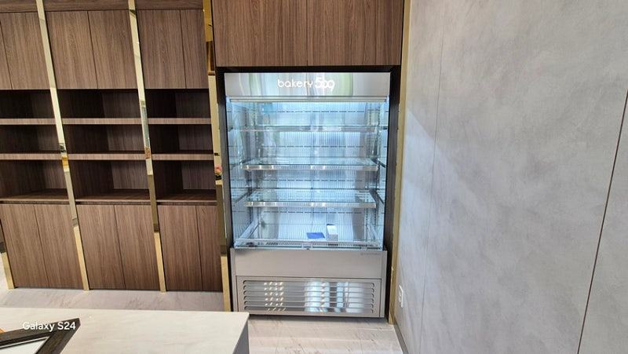

오픈쇼케이스
샐러드가게 창업 준비물, 냉장 설비만 따로 뽑은 체크리스트

샐러드가게 냉장 설비는 손님이 집어 가는 진열용 오픈쇼케이스, 조리대에서 토핑을 바로 꺼내는 작업대 냉장고, 손질 전 채소를 두는 보관 냉장고, 음료 냉장고 네 가지로 나눠 준비하시면 빠지는 게 없습니다. 이 중 진열용 오픈쇼케이스는 매장 첫인상과 회전을 좌우하므로 크기와 위치를 가장 먼저 정하셔야 합니다.
안녕하세요. 샐러드·포케·샌드위치 매장의 진열 냉장 설비를 맞춤으로 만드는 한성쇼케이스입니다.
샐러드가게 창업 준비물을 정리하다 보면 목록이 끝도 없이 길어집니다. 채소 탈수기, 소스 디스펜서, 포장 용기, 저울, 포스기까지 적다 보면 냉장 설비는 "냉장고 몇 대" 한 줄로 끝나기 쉽죠.
그런데 샐러드가게는 재료 대부분이 냉장 보관이라 냉장 설비가 곧 주방이자 매장입니다. 역할별로 나눠 준비하지 않으면 진열장에 재료 박스를 넣어 두거나, 작업대에서 토핑을 꺼내려고 몇 걸음씩 오가는 일이 생깁니다.
오늘은 샐러드가게 창업 준비물 가운데 냉장 설비만 따로 뽑아, 설비별로 무엇을 확인해야 하는지 정리해 드리겠습니다.
1. 진열용 오픈쇼케이스
포장된 샐러드, 랩, 병음료를 손님이 직접 집어 가는 매장이라면 진열용 오픈쇼케이스가 중심 장비입니다.
입구에서 계산대로 가는 흐름에 맞춰 앞쪽에 두면 손님이 고르는 시간이 짧아집니다.
선반 간격을 조정할 수 있어야 샐러드 볼과 병음료를 함께 진열하기 좋고, 탈부착 유리 선반이면 드레싱이 흘렀을 때 빼서 닦기 편합니다.
영업 후 덮는 나이트커버도 처음 주문할 때 함께 넣어 두세요.
샐러드는 잎채소가 숨이 죽는 순간 손님 손이 멈춥니다. 문 없는 구조인 만큼 에어컨 바람이 정면으로 들이치지 않는 자리인지, 오후에 햇볕이 들어오는 창가가 아닌지도 함께 보시고, 진열은 점심 전과 오후 두 번 정도로 나눠 채우는 운영을 미리 계획해 두세요.
- 입구-계산대 흐름에 맞춰 자리를 정하세요.
- 선반 간격 조정과 탈부착 여부를 확인하세요.
- 나이트커버를 함께 주문하세요.
2. 작업대 냉장고
주문을 받아 바로 만드는 매장이라면 조리대 아래가 냉장고이고 위에 토핑 통을 올리는 작업대 냉장고가 필요합니다.
닭가슴살, 달걀, 곡물, 치즈 같은 토핑을 손 닿는 곳에 두어야 점심 피크에 주문이 밀리지 않습니다.
토핑 가짓수와 통 크기를 먼저 정하고 그에 맞춰 길이를 잡으세요. 작업대 높이와 깊이가 맞지 않으면 하루 종일 허리를 숙이거나 팔을 길게 뻗어야 합니다.


3. 재료 보관 냉장고와 음료 냉장고
손질 전 채소 박스, 소스 원재료, 예비 토핑은 주방 안쪽의 보관용 냉장고에 따로 두세요. 진열장이나 작업대 냉장고에 박스를 넣기 시작하면 냉기 흐름이 막히고 문을 여는 횟수도 늘어납니다.
음료 판매 비중이 크다면 음료 냉장고를 따로 두는 편이 관리가 쉽습니다. 샐러드와 음료는 적정 온도와 진열 높이가 달라, 한 장비에 섞으면 한쪽이 손해를 보기 쉽습니다.
- 보관용과 진열용 냉장고를 나눠 쓰세요.
- 음료 비중이 크면 음료 냉장고를 따로 두세요.
4. 설비끼리의 배치와 전기
냉장 장비가 여러 대 들어가니 콘센트 위치와 전기 용량을 인테리어 공사 전에 정해 두셔야 합니다. 멀티탭 하나에 여러 대를 연결하면 전원이 불안정해질 수 있습니다.
장비마다 뒷면 열이 빠질 공간이 필요하고, 열이 나는 장비끼리 붙여 두면 서로를 데웁니다. 주방 도면 위에 장비를 하나씩 올려 보고 작업 동선과 열 배출을 함께 확인해 보세요.
체크리스트
- 진열용 오픈쇼케이스 크기와 위치
- 작업대 냉장고 길이와 토핑 통 구성
- 재료 보관 냉장고
- 음료 냉장고 분리 여부
- 콘센트 위치와 전기 용량
- 장비별 열 배출 공간
매장 크기에 맞춰 제작한 디저트 매장 오픈쇼케이스
작은 가게를 여시는 사장님의 의뢰로, 기성품이 아니라 매장 사이즈와 공간에 맞춰 오픈쇼케이스 냉장고를 제작하고 내부 인테리어 분위기에 맞게 설치한 현장입니다.
진열할 상품은 케이크와 쿠키였는데, 겉으로 먹음직스럽게 보여야 하는 만큼 디자인 쪽도 함께 신경 써서 제작했습니다.
공장에서 직접 만들기 때문에 사장님이 공장에 오셔서 제품을 보고 결정하실 수 있었고, 설치 후 사후 관리까지 맡기로 약속드렸습니다.
샐러드가게도 같은 방식으로 진열할 상품과 공간을 먼저 듣고 크기를 정합니다.





자주 묻는 질문
작은 샐러드가게도 냉장 설비를 네 가지 다 갖춰야 하나요?
매장 규모에 따라 줄일 수 있습니다. 진열용 오픈쇼케이스와 작업대 냉장고를 기본으로 두고, 음료는 진열장 한쪽을 나눠 쓰는 식으로 시작하는 매장도 많습니다.
오픈쇼케이스 대신 도어형을 써도 되나요?
가능합니다. 다만 점심 피크에 손님이 빠르게 집어 가는 매장이라면 오픈형이 회전에 유리하고, 배달 위주라면 도어형도 충분합니다.
냉장 설비를 한곳에서 맞출 수 있나요?
진열용 쇼케이스부터 작업대 냉장고까지 함께 상담하실 수 있습니다. 외관을 통일해 제작하면 매장 분위기가 깔끔하게 이어집니다.
매장 조건에 맞춰 만드는 한성쇼케이스
원하시는 제품 사진과 설치할 공간 사진만 보내 주셔도 매장에 맞는 구성을 추천해 드립니다.
- 전국 240여 개 A/S 전담 센터 운영
- 본사 대량 자재 매입으로 품질 대비 합리적인 가격
- 유럽제·삼성 냉각 콤프레셔 적용
- 국내 최초 쇼케이스 전문 디자이너 상주
매장 폭과 원하는 진열 구성을 알려 주세요. 실측과 견적을 안내해 드립니다.
031-986-2458